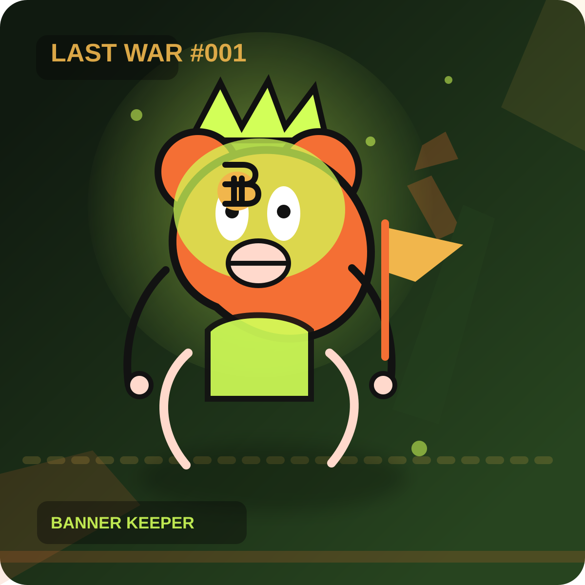

2140 survivors / anti-war signal / post-bitcoin mythology
Last War
An anti-war NFT collection forged at the end of money. After the last bitcoin was mined and the long winter erased the old order, rats and roaches inherited the planet and rebuilt civilization out of fallout, relics, and myth.
Genesis Preview

Anti-war signal locked
Rat Dominion online
Roach Syndicate online
Final bitcoin: extracted
Built with the confidence of top-tier NFT culture, but anchored in a sharper thesis: war leaves only relics, scavengers, and stories powerful enough to survive it.
01
The Last Age
In 2140, the world runs out of slack. Resources collapse, inflation reaches absurdity, and law becomes theater. The last bitcoin is mined into a civilization already too exhausted to save itself.
Governments launch one more war in the language of fairness. It spirals into the final world conflict, followed by an 80-year nuclear winter that leaves humanity as architecture, debris, and rumor.
By 2222, the ground thaws. Rats and roaches, twisted by radiation and proximity to human ruin, emerge with near-human intelligence. They inherit museums, trenches, broken monuments, propaganda, and the ghost religion of bitcoin, then prepare for one last war over what remains.
02
Visual Thesis
- Core icons: rats, roaches, bitcoin relics
- Secondary matter: bone weapons, salvaged steel, stone tools, helmets, masks
- Backdrop language: ruined landmarks, propaganda wreckage, tank graveyards, collapsed transit
- Emotional tone: anti-war, defiant, mythic, black-humored, collectible
03
Collection Positioning
- Not just a PFP drop, but a lore-first wasteland mythology
- Structured for a 2140-piece collection, not a one-off concept pass
- Ready to branch into mint, trailer edits, posters, social avatars, and game-like extensions
04
Faction Design
Two tribes keep the system coherent while giving every piece a clear personality and silhouette.
Warlords of Memory
More regal, more historical, more militant. Bone crowns, courier hoods, relic medals, and improvised banners make the rat line feel like dynasties built out of ash.
Priests of Survival
Harder, stranger, more industrial. Antennae, gas veils, scarred shells, toxic glow, and black-market engineering turn the roach line into a cult of endurance.
Currency as Myth
Bitcoin is no longer money. It survives as halo, wound, crown, tattoo, implant, banner, and holy debris. In Last War, the symbol outlives the system that made it.
05
Genesis Works
The first twelve works already follow the collection grammar: role, weapon, backdrop, and bitcoin form. They read like a real drop because they were built to scale.
Rat Dominion
Last War #001
Loading selected work.
06
Rarity Engine
The collection now has a full weighted rarity protocol. That means the next leap from 12 works to 2140 can stay intentional instead of drifting into random output.
Rat Dominion 1080 / Roach Syndicate 1060
Common scavengers and miners balance rarer warlords, priests, generals, and myth carriers.
Bone crowns, gas veils, steel helmets, halo rigs, courier hoods, oracle wraps.
Clubs, bone spears, flags, stone hammers, rust tools, salvage weapons.
Ruined landmarks and war sites set scarcity, mood, and world-scale identity.
Implants, halo rings, medallions, shell brands, crowns, relic charms, sacred scars.
07
Launch Protocol
The site is now arranged like a real drop: story, rarity logic, collection display, mint access, and post-mint expansion.
World Reveal
Drop the site, the trailer cut, and the first Genesis works so the audience buys into the myth before they price the asset.
Survivor List
Run allowlist through community rituals: story prompts, fan edits, faction pledges, and referral access instead of generic engagement farming.
Mint 2140
Open the mint with fixed supply, wallet limits, and a clear faction-driven rarity story instead of vague “utility” promises.
Aftermath Expansion
Extend into map drops, lore chapters, holder posters, micro-games, soundtrack edits, and physical print pieces.
08
Mint Access
A dedicated mint page is now part of the project, with wallet connection, live pricing logic, quantity controls, launch timing, and contract hand-off notes.
Mint Terminal
Open Mint Page
Ready for contract wiring
The interface is built. Once you deploy the contract, you only need to replace the placeholder address and ABI wiring to ship.
09
Project Notes
Why exactly 2140 pieces?
Because the supply should feel coded into the myth itself. 2140 is both the origin year of collapse and the hard ceiling of the collection.
Why this tone instead of cute PFP energy?
Because Last War wins when it looks dangerous, legendary, and poster-ready. The anti-war message gets stronger when the world feels consequential.
What should happen next?
Deploy contract details, replace placeholder GitHub and social links, then expand the trait pools with more backgrounds, weapons, and one-of-one relic classes.